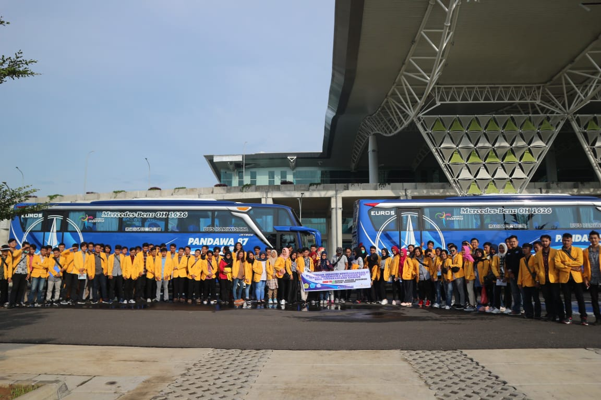
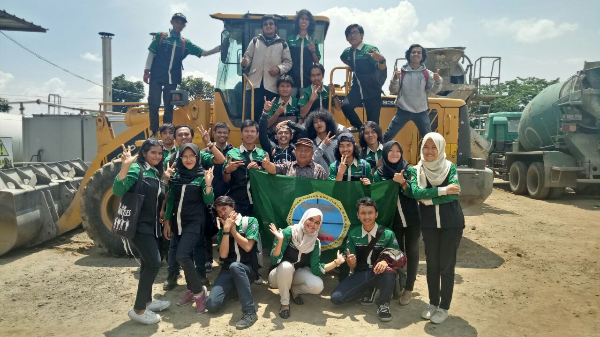

FAKULTAS TEKNIK | Universitas Suryakancana
Belajar Langsung ke Lapangan, Mahasiswa Teknik Informatika Melakukan Kunjungan Industri
Kurang lebih sebanyak 150 mahasiswa tingkat II Teknik Informatika Universitas Suryakancana melakukan kunjungan industri ke BJIB Kertajati Majalengka pada tanggal 14 Januari 2019. Kunjungan industri ini merupakan kegiatan rutin tahunan yang dilakukan Teknik Informatika Unsur. Kunjungan ini merupakan bagian dari kuliah lapangan atau yang sering disebut dengan kewirausahaan IT. Di dalam kegiatan ini mahasiswa diberikan arahan oleh perwakilan dari BJIB Kertajati mengenai gambaran BJIB Kertajati, gambaran pekerjaan yang sesuai dengan program studi, dan bagaimana cara memanage perusahaan tersebut. Selain itu, mahasiswa diajak untuk melihat bagaimana sebuah perusahaan beroperasi dan bekerja. Pada akhirnya, Fakultas Teknik berharap kuliah lapangan ini dapat menambah wawasan mahasiswa mengenai proyek dan kondisi di lapangan sesuai dengan program studinya, membandingkan pengetahuan yang di dapat mahasiswa di kampus dengan dunia industri nyata, dan mengembangkan ide kreatif mahasiswa untuk berkarya dalam industri sesuai dengan program studi yang dipilihnya.

Berkenalan Langsung dengan Alat Berat Kontruksi, Mahasiswa Teknik Sipil Kuliah di Lapangan
Tidak hanya materi yang dipelajari dari dosen, diskusi dengan teman dan literatur lain, mahasiswa teknik sipil Unsur mempelajari alat berat kontruksi langsung di lapangan. Kegiatan ini merupakan kegiatan wajib yang dilakukan dalam matakuliah Metode Peralatan Kontruksi. Dalam kuliah lapangan ini mahasiswa diperkenalkan dengan alat-alat kontrusi, seperti nama alat, jenis alat, dan kegunaan alat yang biasa digunakan di lapangan/proyek. Selain itu, mahasiswa juga praktik secara langsung di mulai dengan menghitung kapasitas alat beratnya, biaya sewa alat berat, efisiensi waktu penggunaan alat berat dan mahasiswa juga diperkenalkan bagaimana cara membuat campuran hot mix. Tentu saja kegiatan ini sangat membantu mahasiswa dalam memperdalam ilmu teknik sipil, sehingga mahasiswa benar-benar akan mampu melakukan praktiknya, bukan hanya sekedar teori. Dan kegiatan ini akan terus menjadi kegiatan rutinan matakuliah Metode Peralatan Kontruksi setiap tahun.

Belajar Menganalisis Permasalahan dalam Manajemen Organisasi, Mahasiswa Teknik Industri Siap Di Dunia Industri
Teknik Industri Unsur terus meningkatkan keilmuan mahasiswanya dengan mengikuti perkembangan zaman. Salah satunya dengan adanya mata kuliah Data Mining dan Manajemen Pengetahuan. Matakuliah ini merupakan matakuliah wajib teknik industri unsur. Pembahasan dalam matakuliah ini sendiri dimulai dari pengenalan terhadap aktivitas data mining. Pra-persiapan data yang merupakan aktivitas sebelum pengolahan data dimulai yang meliputi pembersihan data hingga transformasi data agar siap diolah. Mata kuliah ini juga mencakup berbagai model-model pengolahan data mining seperti Exploratory Data Analysis, Pendekatan Statistik untuk Estimasi dan Prediksi, k-Nearest Neighbor Algorithm, Decision Tress, Neural Networks, Hierarchical and k-Means Clustering, Kohonen Networks, Association Rules, serta tekni evaluasi terhadap model-model tersebut. Mata kuliah ini dilanjutkan dengan pemahaman mengenai manajemen pengetahuan yang mencakup pemahaman definisi, siklus KM dan model dari KM, serta teknik penangkapan dan kodifikasinya untuk kegiatan berbagai pengetahuan. Pembelajaran ini diharapkan menjadikan mahasiswa menjadi manusi yang memiliki SDM siap dalam memahami konsep dan proses pengolahan data mining industri, mampu menganalisis permasalahan real-world dengan menggunakan model-model data mining dan memahami konsep manajemen pengetahuan di dalam suatu organisasi. Tentu saja, ini merupakan hal yang diperlukan ketika menghadapi dunia kerja di masa sekarang dan masa depan.